Uganda climate study · 1981–2026 · 0.25° satellite-gauge analysis
Uganda's rains and heat, 1981–2026
The forecast for 2026 promised heavy El Niño rains. So far it has been dry. This report checks that forecast against the data, measures how Uganda's seasons, temperature and wind have changed over 45 years, and turns the results into guidance for water, food, drainage and bulk water design.
of normal rain fell from 1 Sep to 5 Oct; June–August was 60% of normal, the driest in the 1981–2025 record.
In 1997 Uganda was just as dry on 5 October, then finished Oct–Dec 37% above normal. The heavy rains usually come in late Oct–Nov.
Oct–Dec rain follows the Indian Ocean more closely than the Pacific. El Niño helps mainly when the Indian Ocean Dipole is strongly positive.
Sep–Nov rain in Karamoja (+6% in Acholi). In the north and north-east, the rainy season now ends 5–10 days later each decade.
warm nights per year (1981–95 vs 2011–25). Minimum temperature is up 0.2–0.34 °C per decade in every dataset.
in mean wind speed; the strongest gust-day of the year is up about 0.1 m/s per decade.
Short answers to the questions asked
- Was the El Niño forecast wrong? Not yet provable. September was very dry, but in the four strongest El Niños on record (1982, 1997, 2015, 2023) Uganda's Oct–Dec rain ended in the upper third every time. The real risk this year is a weak Indian Ocean Dipole with a warm eastern Indian Ocean, which the forecasters assumed would turn positive.
- Have the seasons changed? Yes, in specific ways. The second rains are wetter and longer, especially in the east and north. The single season of the north and Karamoja now ends later. The first rains now start about a week earlier than in the 1980s, most clearly in the south-west.
- Hotter or colder? Hotter, especially at night. Daytime maximum warming is real but uncertain in size, because the station record is thin.
- Windier? Not on average. The strongest wind days have strengthened slightly.
- Water-scarce now? Karamoja (semi-arid, up to 8 dry months a year), then a dry sub-humid belt through Acholi, Lango-Kyoga, Teso and West Nile/Madi, plus the Rwenzori rain shadow (Ntoroko, Kasese lowlands) and the Ankole rangelands of the south-west (4–5 dry months).
- Water-scarce in future? The same places, under more pressure. Climate models give rainfall gains that slightly outpace higher evaporation, but population growth and the drier models put the Acholi–Lango–Teso belt and the Ankole rangelands at risk by 2050. See section 9.
- Engineering: keep design storms at least at historical gauge values, add a warming uplift of about 7% per °C, design water sources for a repeat of the 2009 drought, and plan treatment for hotter raw water and sharper turbidity peaks.
1. The 2026 El Niño forecast against the data
What was forecast. On 30 July 2026 the Ministry of Water and Environment, through the meteorological department, warned of "a high probability of above-normal rainfall episodes in several parts of the country" for September to December 2026, linked to a developing El Niño. On 18 August the regional climate outlook forum (GHACOF-74, ICPAC) issued a wetter-than-normal October–December outlook for most of the Greater Horn of Africa. It relied on El Niño strengthening and on the Indian Ocean Dipole (IOD) turning positive, citing 1997 and 2023 as analogue years.
What the ocean did. El Niño developed as expected and is now exceptionally strong: Niño-3.4 reached +2.9 °C in September 2026 (ERSST v5), and NOAA's three-month ONI reached +2.16 °C for Jul–Sep. The Indian Ocean did not follow the 1997 script. The IOD index is only +0.5 °C, and the eastern pole off Sumatra is warm (+0.4 °C). In 1997 it was cold (−0.8 °C), and that cold eastern pole is what pushes extra moisture onto East Africa.
What the rain did. The figures below compare 2026 with every year since 1981.
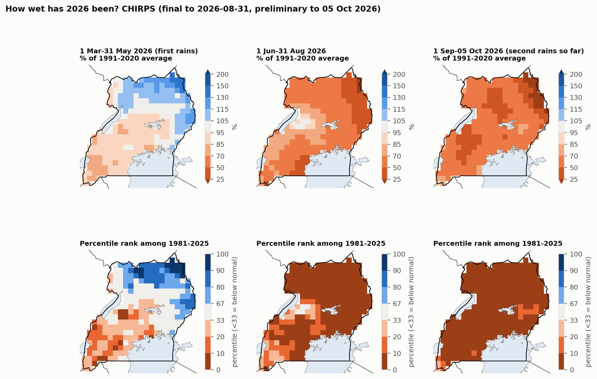
| Zone | Mar–May 2026 % of normal | Jun–Aug 2026 % of normal | 1 Sep–5 Oct 2026 % of normal | 1 Sep–5 Oct percentile |
|---|---|---|---|---|
| Karamoja (NE, semi-arid) | 123 | 32 | 19 | 0 |
| North (Acholi–Kitgum) | 110 | 56 | 54 | 2 |
| West Nile–Lango–Teso–Elgon belt | 100 | 63 | 56 | 2 |
| Mid-west & Kyoga | 91 | 77 | 52 | 0 |
| Lake Victoria crescent | 92 | 58 | 59 | 2 |
| South-west (Ankole–Kigezi) | 86 | 64 | 60 | 2 |
| Uganda | 98 | 60 | 54 | 2 |
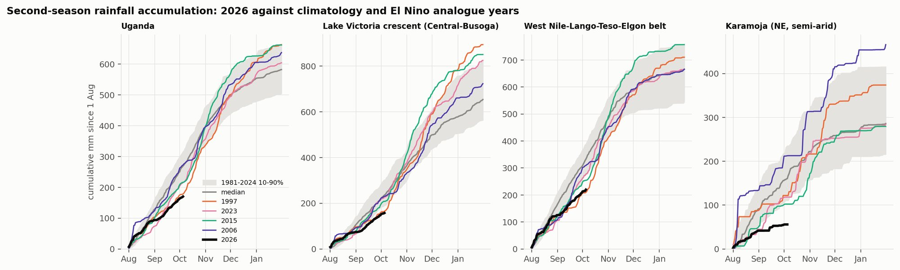
September is the shoulder of the season. In the central and eastern zones the second rains start, on average, between 18 August and 7 September, but the heavy El Niño months are October and November. The El Niño years in the record had dry starts as often as wet ones:
| El Niño year | ONI Oct–Dec | IOD (DMI) Sep–Nov | East IO pole Sep–Nov | Uganda 1 Sep–5 Oct % of normal | Uganda Oct–Dec % anomaly |
|---|---|---|---|---|---|
| 1982 | 2.0 | 0.46 | −0.36 | 87 | +13 |
| 1986 | 1.0 | 0.40 | −0.56 | 86 | −11 |
| 1987 | 1.2 | 0.17 | 0.00 | 95 | −11 |
| 1991 | 1.2 | 0.23 | −0.33 | 83 | −11 |
| 1994 | 0.9 | 0.81 | −0.99 | 91 | +1 |
| 1997 | 2.3 | 1.05 | −0.81 | 53 | +37 |
| 2002 | 1.1 | 0.40 | −0.23 | 93 | +9 |
| 2006 | 0.8 | 0.78 | −0.61 | 106 | +11 |
| 2009 | 1.2 | −0.14 | +0.37 | 76 | −10 |
| 2015 | 2.4 | 0.56 | +0.32 | 84 | +33 |
| 2018 | 1.0 | 0.46 | −0.15 | 87 | −6 |
| 2023 | 1.9 | 1.27 | −0.46 | 101 | +15 |
| 2026 | 2.2 (Jul–Sep) | 0.52 (Sep) | +0.42 (Sep) | 54 | ? |
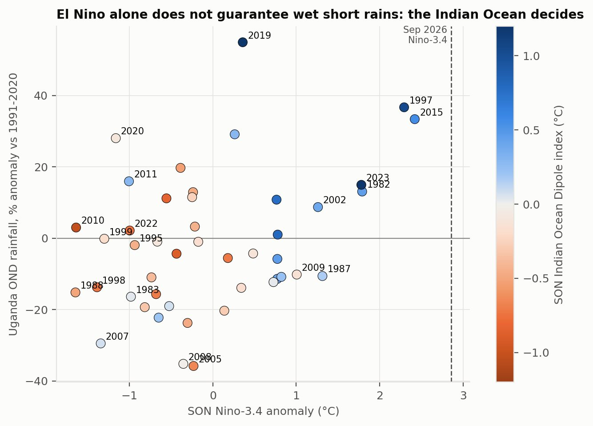
| Type of year (Sep–Nov ocean state) | Years | Mean Oct–Dec anomaly | Upper third | Lower third |
|---|---|---|---|---|
| Strong El Niño (Niño-3.4 ≥ 1.5 °C) | 4 | +25% | 4 of 4 | 0 of 4 |
| Positive IOD (DMI ≥ 0.6), not strong El Niño | 3 | +22% | 2 of 3 | 0 of 3 |
| Weak or moderate El Niño, no strong +IOD | 7 | −7% | 1 of 7 | 4 of 7 |
| Neutral | 14 | −5% | 5 of 14 | 5 of 14 |
| La Niña (Niño-3.4 ≤ −0.5 °C) | 17 | −6% | 3 of 17 | 9 of 17 |
Reading this for 2026
History favours a wet end to 2026: every strong El Niño since 1981 gave above-normal Oct–Dec rain. The record is short, though: four cases, and none as strong as 2026. Two things argue for caution. The Indian Ocean's eastern pole is warm rather than cold, as it was in 2009 and 2015, and the dry September has already used up a month of the season. The fairest summary is that the forecast was reasonable but stated with more confidence than the evidence supports. It should have said that much depends on the Indian Ocean, and that the first weeks of the season could be dry.
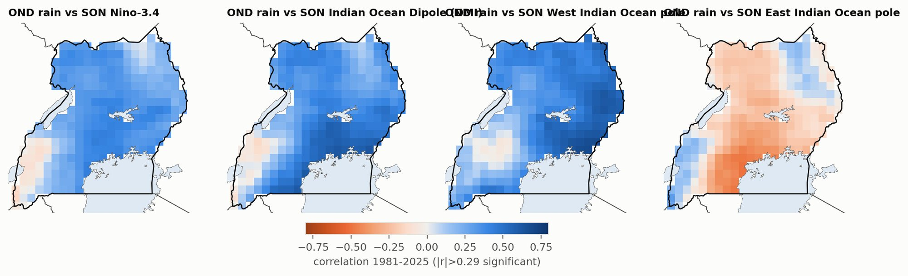
2. How to forecast better
I tested six statistical forecasts of Oct–Dec zone rainfall, each re-fitted 45 times with the target year and its neighbours left out. The forecasts were issued at two times: mid-August, using July ocean temperatures (the GHACOF timing), and early October, adding September ocean data and September rain.
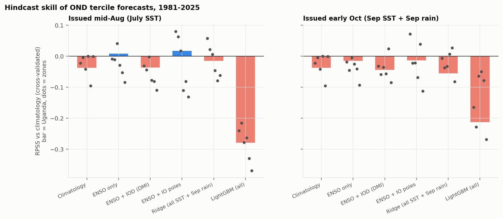
Taking the best-behaved model (ENSO plus the two Indian Ocean poles) at face value for 2026 gives Uganda an 83% chance of an above-normal Oct–Dec (fig 19). It does not know that 2026 is beyond anything in its training data, so treat it as an upper bound rather than a forecast.
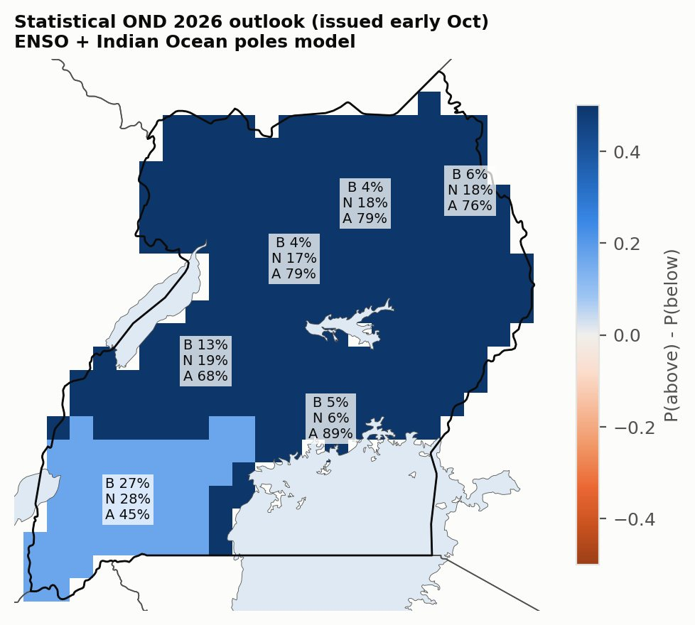
Practical improvements for Uganda's seasonal forecasts
- Forecast the Indian Ocean, not just El Niño. Make the IOD, and especially the sign of the eastern pole, the headline predictor for Sep–Dec. State explicitly what happens if the IOD stays neutral.
- Issue probabilities with conditional language. Say "65% chance of above normal" rather than "heavy rains". Publish the hindcast skill for each region with each outlook, so users can judge it; skill is near zero for the south-west and Karamoja in most years.
- Separate onset from season total. El Niño years often start late. A monthly update with a sub-seasonal forecast (2–4 weeks, tracking the Madden–Julian Oscillation) would have flagged the dry September.
- Update monthly as the season unfolds. Re-issue in early October and early November with the latest ocean state and observed rain. That is when the 2026 picture becomes clear.
- Use multi-model dynamical forecasts (Copernicus C3S, NMME, WMO Lead Centre) and downscale them to Uganda's six rainfall regions defined here. They capture Indian Ocean–Pacific interaction better than regressions.
- Rescue and share station data. Public daily records for Uganda end in 1986. Digitising and releasing UNMA's archive would sharpen every number in this report, from forecast skill to drainage design storms.
3. Six rainfall regions
Uganda's rainfall was grouped by the shape of its yearly cycle and its annual total (k-means clustering of 269 grid cells of 0.25°, about 28 km). The result is six regions, each with a distinct rhythm. The south-west and Lake Victoria crescent have two clear seasons. The north and West Nile have one long season with a mid-year dip. Karamoja has a short, unreliable single season.
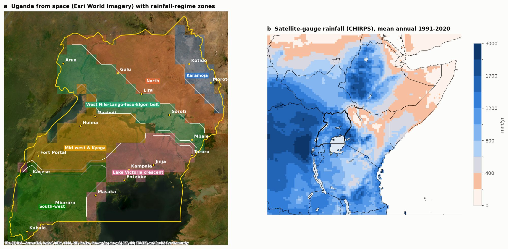
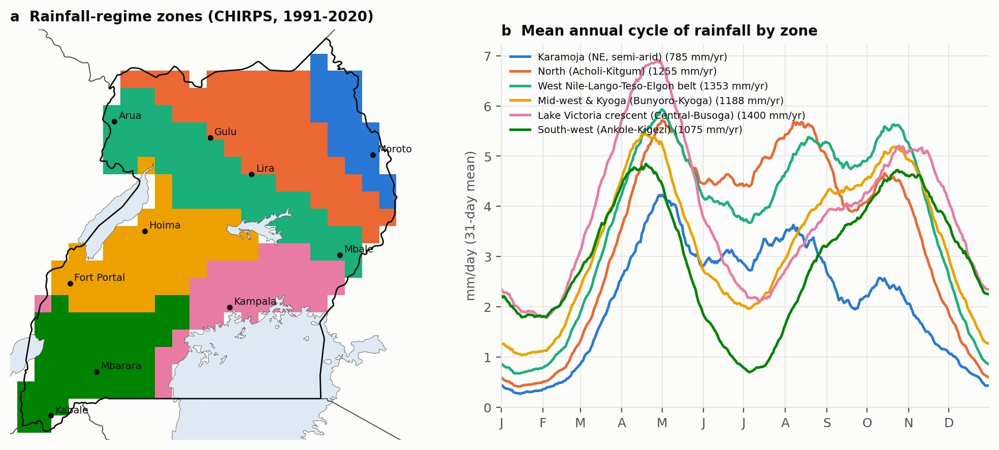
4. Rainfall trends, 1981–2025
Uganda as a whole has become slightly wetter: +1.5% per decade, not statistically significant nationally. The change is uneven. The second rains (Sep–Nov) have grown strongly in the east and north-east, while the first rains (Mar–May) have weakened in the north-west.
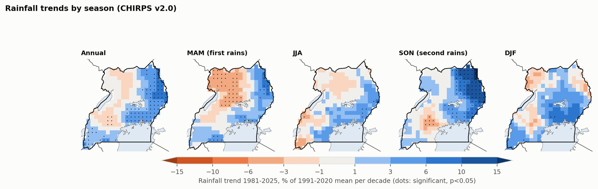
| Zone | Annual mean mm | Annual trend %/decade | Mar–May %/decade | Sep–Nov %/decade | Dec–Feb %/decade | Year-to-year variability (CV) |
|---|---|---|---|---|---|---|
| Karamoja | 785 | +5.9* | +4.9* | +13.9* | −1.6 | 21% |
| North (Acholi–Kitgum) | 1,256 | +1.9* | −0.8 | +5.8* | +0.7 | 11% |
| West Nile–Lango–Teso–Elgon | 1,355 | +0.4 | −2.0 | +2.3 | +2.0 | 10% |
| Mid-west & Kyoga | 1,189 | −0.6 | −1.6 | −0.5 | +2.0 | 7% |
| Lake Victoria crescent | 1,400 | +3.4* | +2.0 | +3.1 | +6.2 | 11% |
| South-west | 1,074 | +1.4 | +1.4 | 0.0 | +2.0 | 7% |
| Uganda | 1,215 | +1.5 | −0.2 | +2.7 | +4.0 | 9% |
* significant at p < 0.05 (Mann–Kendall test corrected for autocorrelation). Zone means are area-weighted means of CHIRPS 0.25° cells.
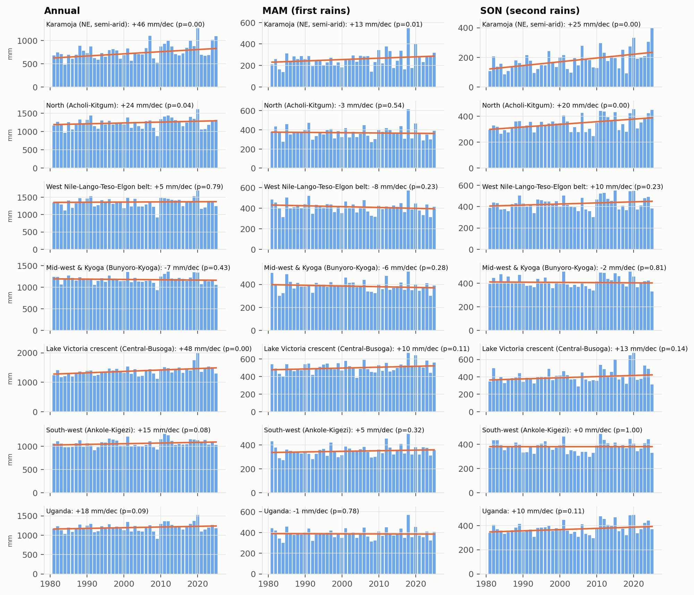
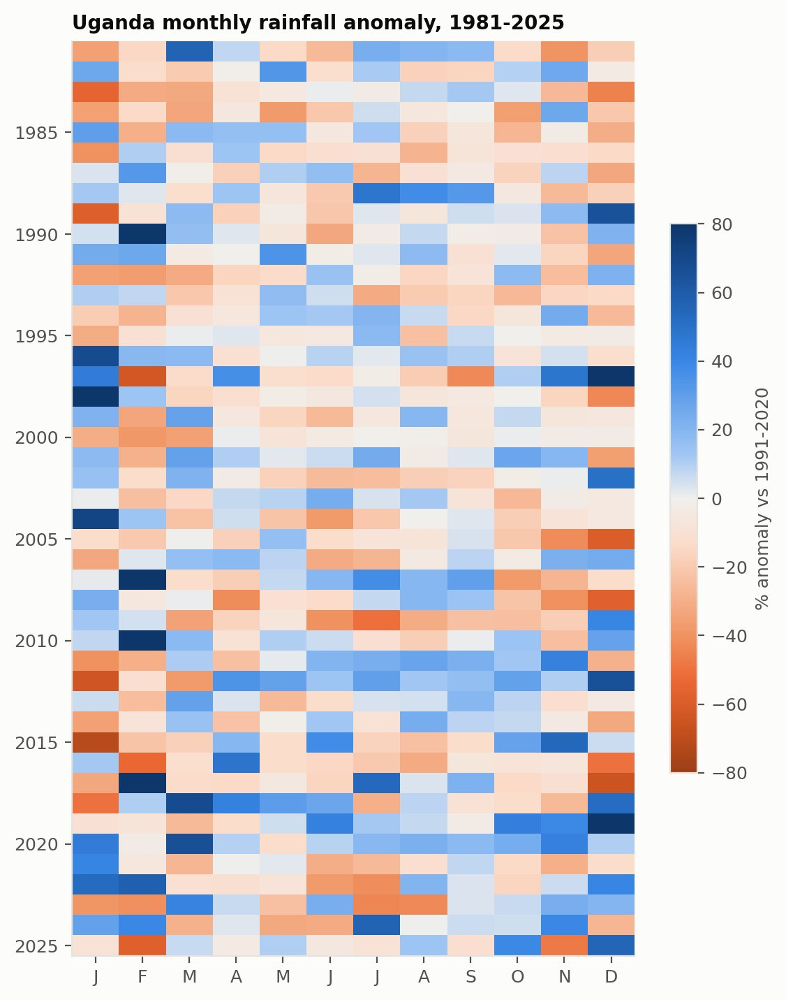
Rainfall extremes
Rain falls on more days than it used to (+2% per decade, significant), but the share falling in very heavy downpours has not risen nationally in CHIRPS. Heavy-rain indices rose in Karamoja and around Lake Victoria and fell in the north and mid-west. CHIRPS lost many contributing rain gauges after the 1990s, which can damp recent extremes, so these falls should not be read as a reason to relax design standards (section 12).
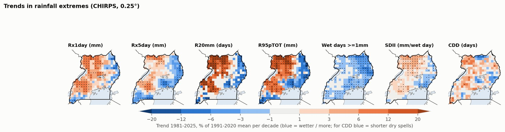
5. Have the seasons shifted or changed length?
Season start and end dates were computed for every grid cell and every year using the anomalous-accumulation method (Liebmann et al. 2012; Dunning et al. 2016). This marks onset where rain starts to exceed the local daily average persistently, rather than at a single wet day. Cells with two seasons were treated separately from cells with one.
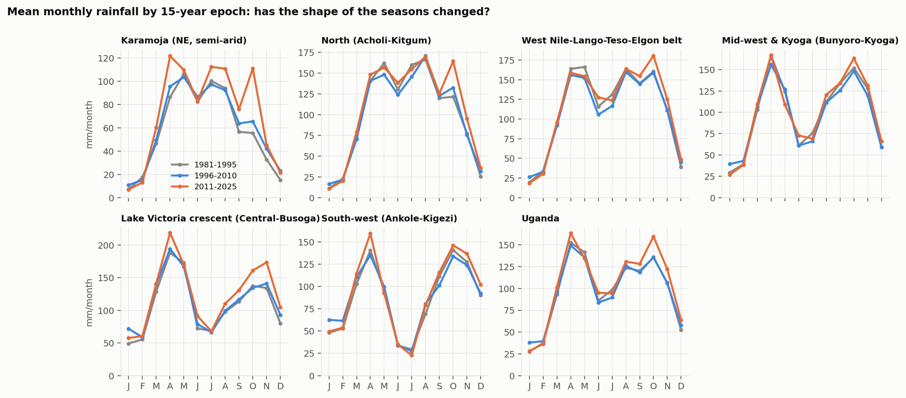
| Season and zone | Onset 1981–95 | Onset 2011–25 | End 1981–95 | End 2011–25 | Length (days) 1981–95 → 2011–25 | Total (mm) 1981–95 → 2011–25 |
|---|---|---|---|---|---|---|
| First rains · Lake Victoria crescent | 18 Mar | 11 Mar | 30 May | 30 May | 74 → 81* | 481 → 552* |
| First rains · South-west | 16 Mar | 9 Mar* | 16 May | 13 May | 62 → 67 | 310 → 346 |
| First rains · Mid-west & Kyoga | 21 Mar | 15 Mar | 27 May | 22 May | 68 → 69 | 376 → 369 |
| Second rains · Lake Victoria crescent | 6 Sep | 27 Aug | 15 Nov | 27 Nov | 71 → 93* | 388 → 576* |
| Second rains · South-west | 3 Sep | 29 Aug | 10 Dec | 17 Dec | 99 → 111 | 462 → 520 |
| Second rains · Mid-west & Kyoga | 21 Aug | 17 Aug | 24 Nov | 28 Nov | 96 → 105 | 484 → 533 |
| Single season · Karamoja | 10 Apr | 3 Apr | 5 Sep | 4 Oct* | 150 → 185* | 553 → 727* |
| Single season · North (Acholi) | 8 Apr | 4 Apr | 23 Oct | 4 Nov | 199 → 216 | 1,067 → 1,117 |
| Single season · West Nile–Teso belt | 31 Mar | 8 Apr | 8 Nov | 16 Nov | 223 → 222 | 1,194 → 1,167 |
Dates are zone means of cell-by-cell onset and cessation. * significant trend (p < 0.05). In the West Nile–Teso belt a minority of cells are bimodal; their first rains now end about five days later (16 → 21 Jun). Nationally, first-rains onset moved earlier by 2.4 days per decade (p = 0.05).
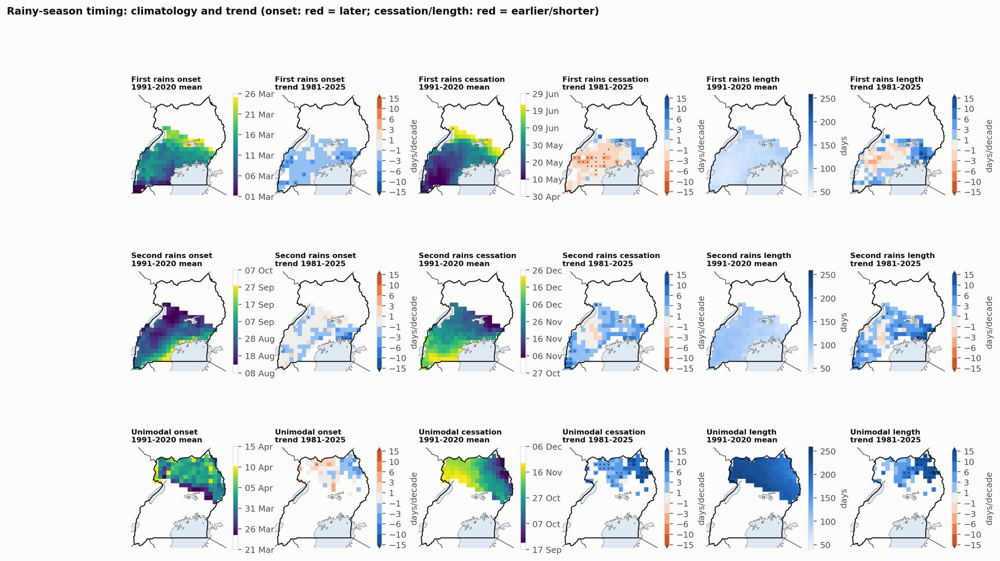
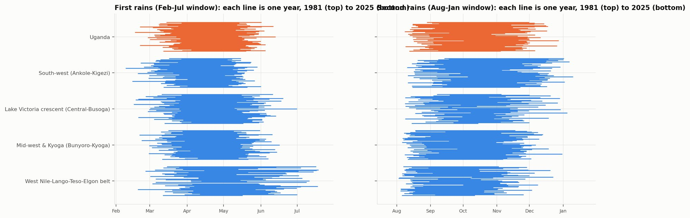
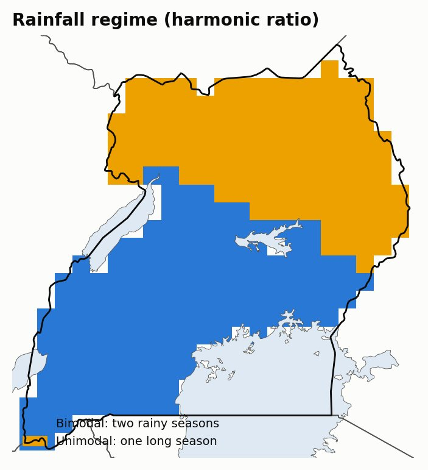
6. Has it got hotter?
Yes. Three independent temperature datasets agree on warming and disagree on its size. Night-time minimum temperatures rose 0.2–0.34 °C per decade in both the gauge-based CPC record and the NASA POWER (MERRA-2) reanalysis. Warm nights, defined as nights above the 1991–2020 90th percentile for the date, nearly tripled. Daytime maximum temperature rose 0.24 °C per decade in the reanalysis. The CPC gauge record has step changes in 1990–93, 2006–08 and 2016 that track changes in the reporting station network, so its flat daytime trend is unreliable. GHCN-CAMS shows +0.5 °C per decade, but it is interpolated from very few Ugandan stations.
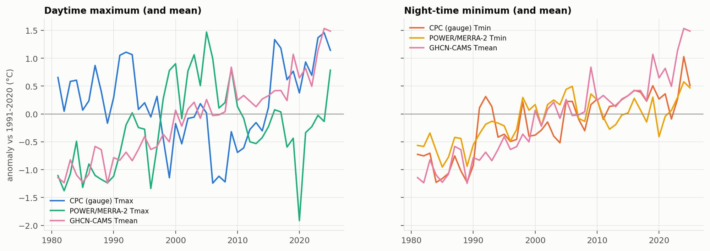
| Indicator | Source | 1991–2020 mean | Trend per decade | Change 1981–95 → 2011–25 | Confidence |
|---|---|---|---|---|---|
| Minimum temperature | CPC gauges | 18.5 °C | +0.34 °C* | +0.96 °C | Robust |
| Minimum temperature | NASA POWER / MERRA-2 | 18.5 °C | +0.20 °C* | +0.55 °C | Robust |
| Maximum temperature | NASA POWER / MERRA-2 | 29.3 °C | +0.24 °C | +0.52 °C | Uncertain |
| Maximum temperature | CPC gauges | 28.0 °C | +0.05 °C | +0.10 °C | Inhomogeneous |
| Mean temperature | GHCN-CAMS | 24.5 °C | +0.51 °C* | +1.52 °C | Sparse stations |
| Warm nights (TN90p) | CPC | — | +14 nights* | 22 → 60 nights/yr | Robust |
| Hot days (TX90p) | CPC | — | +6.6 days | 42 → 66 days/yr | Uncertain |
| Day–night range | CPC | — | −0.3 °C | 10.7 → 9.8 °C | Uncertain |
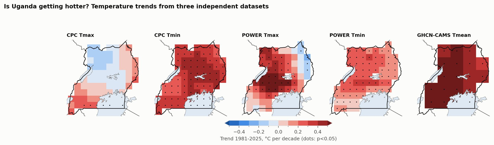
7. Windier? Other climate parameters that matter
Rain and temperature are not the whole story for water and engineering. Evaporative demand (ET0) decides how much rain is useful. Humidity and wind drive evaporation from reservoirs and crops. Solar radiation drives crop growth and solar power. Soil moisture integrates all of them. Each was computed from NASA POWER daily data (MERRA-2 meteorology, CERES radiation) and the CPC soil-moisture model.
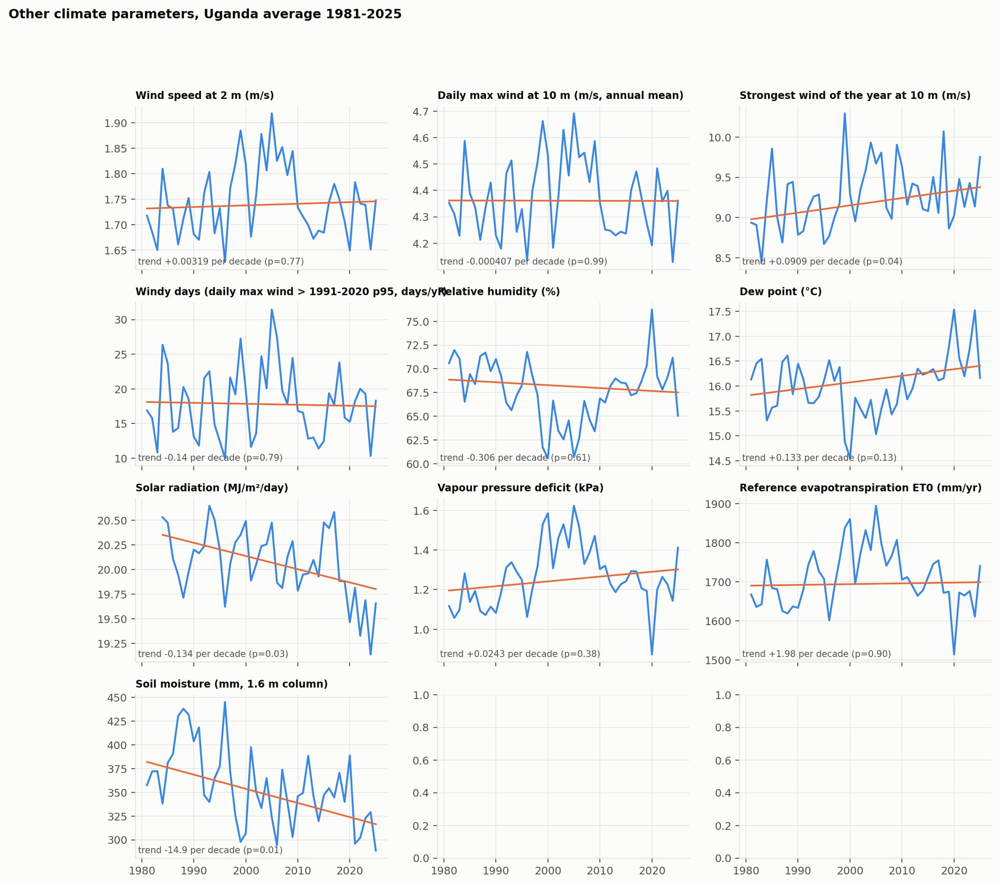
| Parameter | 1991–2020 mean | Trend per decade | Significant? | Why it matters |
|---|---|---|---|---|
| Wind speed at 2 m | 1.76 m/s | +0.003 m/s | No | Evaporation, structural wind loads |
| Daily maximum wind at 10 m | 4.39 m/s | 0.000 m/s | No | Storm damage, dust, roofing |
| Strongest wind of the year (10 m) | 9.3 m/s | +0.09 m/s | Yes (p = 0.04) | Design wind, power lines, lake transport |
| Relative humidity | 66.7% | −0.3 points | No | Evaporation, disease, comfort |
| Dew point | 15.9 °C | +0.13 °C | No | Heat stress at night |
| Solar radiation | 20.1 MJ/m²/day | −0.13 | Yes (p = 0.03) | Crop growth, solar pumping and power |
| Vapour pressure deficit | 1.32 kPa | +0.02 | No | Crop water stress |
| Reference evapotranspiration ET0 | 1,733 mm/yr | +2 mm | No | Irrigation, reservoir losses, water balance |
| Soil moisture (1.6 m column, CPC model) | 352 mm | −15 mm | Yes (p = 0.01) | Crop failure, groundwater recharge |
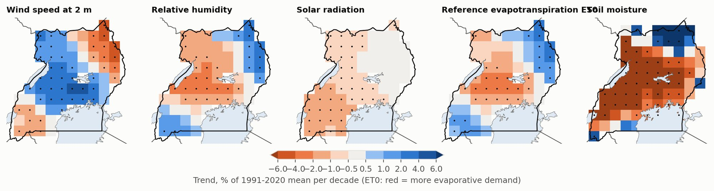
Other parameters worth monitoring. Lake Victoria and Lake Kyoga water levels (intakes, hydropower, flooding of lakeshore towns; Jinja reached a record 13.4 m in 2020); river flows at gauging stations (yield); groundwater levels (most rural supply); lightning (Lake Victoria is one of the most active thunderstorm areas on Earth); hail; dust; and sea surface temperatures in the western Indian Ocean as the best single predictor of Oct–Dec rainfall.
8. Uganda against East Africa, Africa and the world
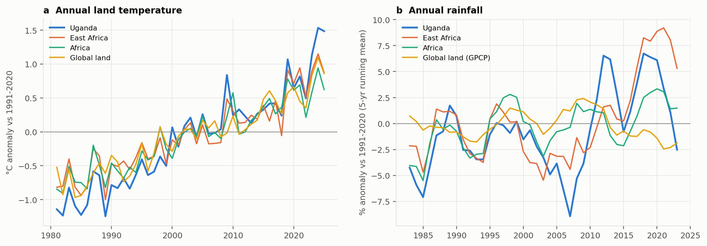
| Region | Temperature trend °C/decade | Warming 1981–95 → 2011–25 | Rainfall trend %/decade |
|---|---|---|---|
| Uganda | +0.51 (GHCN-CAMS) +0.20–0.34 nights (CPC, MERRA-2) | +1.5 °C (CAMS) | +1.1 |
| East Africa (12°S–12°N, 28–42°E) | +0.37 | +1.1 °C | +1.6* |
| Africa (land) | +0.36 | +1.0 °C | +1.1* |
| Global land | +0.37 | +1.1 °C | −0.2 |
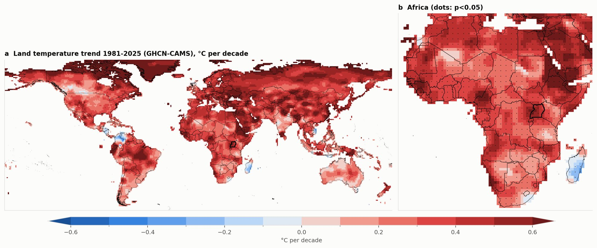
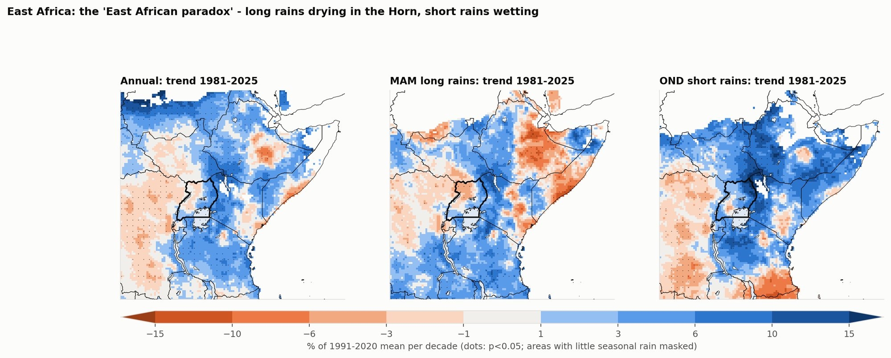
How these results compare with published studies
- Long rains decline (Mar–May). Lyon & DeWitt (2012) and Rowell et al. (2015) documented an abrupt decline after 1999 in the eastern Horn. Wainwright et al. (2019) traced it to a shorter season, with later onset and earlier end. In Uganda the decline is weak and confined to the north-west. Around Lake Victoria the first rains have instead started earlier and grown.
- Short rains increase (Oct–Dec). Consistent with the observed and projected wetting of East African short rains in IPCC AR6 (Ch. 8 and the Atlas) and with the strong IOD influence of Saji et al. (1999) and Black et al. (2003). This study puts the Uganda signal at +6 to +14% per decade in the north and north-east.
- Warming. Uganda's +0.2–0.5 °C per decade is in line with the observed warming IPCC AR6 assesses for East Africa and with the 0.36–0.37 °C per decade found here for East Africa, Africa and global land.
- CHIRPS reliability. Kimani et al. (2017) rate CHIRPS among the best products for East African seasonal totals. This study confirms it underestimates point daily extremes by about half compared with Ugandan gauges (section 12).
9. Which parts of Uganda are water-scarce?
Climatic water scarcity is measured here by comparing rain (supply) with evaporative demand (ET0, FAO-56 Penman–Monteith). The aridity index P/ET0 uses the UNEP classes. "Dry months" counts months when rain is less than half of ET0. Demand from people and livestock is not included; adding population would sharpen the picture for towns.
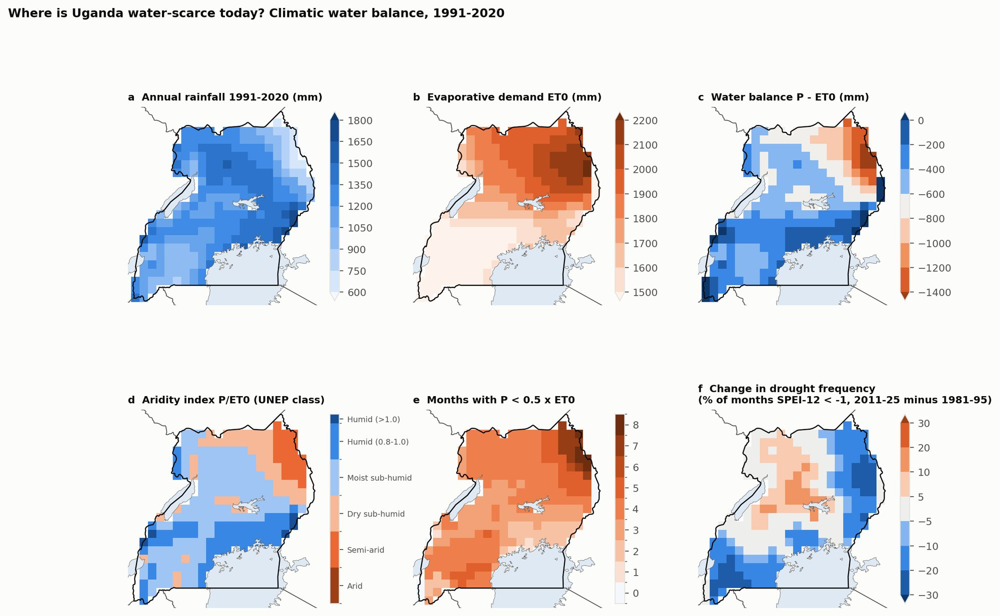
| County (ADM2) | Rain mm/yr | ET0 mm/yr | Aridity P/ET0 | Class | Dry months | Drought months % 1981–95 → 2011–25 |
|---|---|---|---|---|---|---|
| Matheniko (Moroto) | 651 | 2,171 | 0.30 | Semi-arid | 8.3 | 25 → 3 |
| Dodoth (Kaabong) | 804 | 2,050 | 0.39 | Semi-arid | 7.0 | 18 → 3 |
| Jie (Kotido) | 871 | 2,115 | 0.41 | Semi-arid | 6.5 | 18 → 3 |
| Bokora (Napak) | 961 | 2,151 | 0.45 | Semi-arid | 5.5 | 25 → 3 |
| Pian (Nakapiripirit) | 955 | 2,106 | 0.46 | Semi-arid | 5.7 | 28 → 3 |
| Chua (Kitgum) | 1,090 | 1,983 | 0.55 | Dry sub-humid | 4.6 | 11 → 3 |
| Jonam (Pakwach) | 994 | 1,762 | 0.56 | Dry sub-humid | 4.0 | 3 → 4 |
| Labwor (Abim) | 1,196 | 2,104 | 0.57 | Dry sub-humid | 4.8 | 15 → 5 |
| Kioga (Amolatar) | 1,159 | 1,844 | 0.63 | Dry sub-humid | 4.0 | 4 → 15 |
| Budiope (Buyende) | 1,176 | 1,820 | 0.65 | Dry sub-humid | 4.0 | 2 → 17 |
| Ntoroko | 924 | 1,549 | 0.60 | Dry sub-humid | 4.0 | 7 → 11 |
| Agago | 1,275 | 2,047 | 0.62 | Dry sub-humid | 4.5 | 8 → 6 |
Full table for all 151 counties: results/water_district.csv. Values are means over the 0.25° cells whose centres fall in each county.
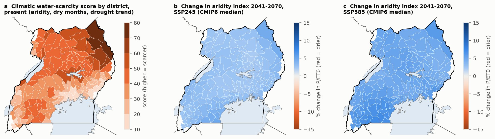
Future water scarcity
Sixteen CMIP6 climate models agree that Uganda will warm by 1.3 °C (SSP2-4.5, a middle path) to 1.8 °C (SSP5-8.5, high emissions) by 2041–2070, relative to 1991–2020. Every model warms; the range is 1.0–2.3 °C. Observed warming since 1981 has tracked the model median closely (fig 26). Most models also project more rain: +6% a year in the median under SSP2-4.5 and +10% under SSP5-8.5. The gain comes mostly in Oct–Dec (+8% and +12%), continuing the observed wetting of the second rains. Mar–May changes are small and models disagree, with 1 in 4 projecting less.
What this means for scarcity. Evaporative demand rises 3–4.5% with the warming. In the ensemble median, rainfall gains slightly outpace it, so the aridity index improves a little in every county and no county moves into a drier class. Climate change alone therefore does not create new water-scarce regions by mid-century. Today's scarce areas stay scarce: Karamoja remains semi-arid with 8 dry months in Matheniko.
Three things make that reassurance weaker than it looks:
- The dry-end models. One model in ten projects no rainfall gain. In that case the 3–5% extra evaporative demand lowers the aridity index by 3–4%, pushing the dry sub-humid belt of Acholi, Lango-Kyoga and Teso (P/ET0 0.55–0.65) toward semi-arid.
- The East African paradox. Models projected wetter long rains for the 1990s–2010s, and the eastern Horn got drier instead (Rowell et al. 2015). Treat projected Mar–May gains with suspicion.
- Demand grows faster than climate changes. UN projections have Uganda's population growing by roughly 70–90% by 2050, and irrigation demand is rising. Per-person water availability will fall sharply in the dry belt and in fast-growing towns (Greater Kampala, Gulu, Lira, Mbarara, Arua, Moroto) even if rainfall holds.
The places most likely to become water-stressed by 2050 are the existing dry sub-humid belt (Agago, Kitgum, Pader, Abim, Amolatar, Buyende, Nakasongola, Pakwach) and the Ankole rangelands. There, rising demand meets a rainfall regime that is variable now and close to semi-arid in the drier models.
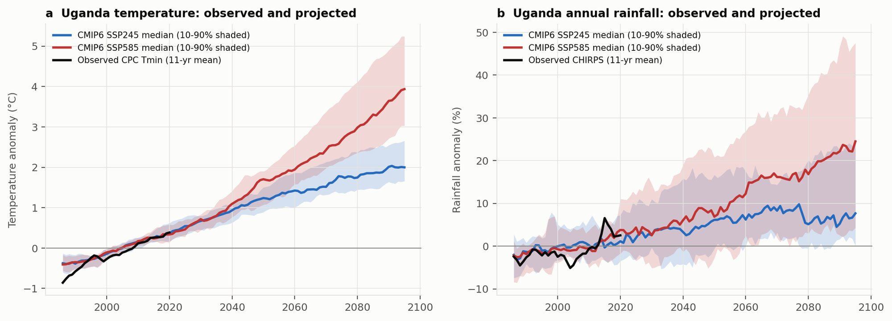
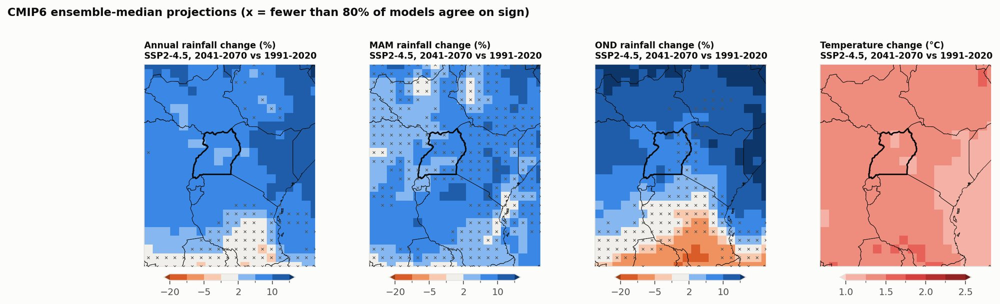
10. Food security and irrigation
For rain-fed farming, what matters is how long the growing period lasts and how often a season fails, more than the annual total. The growing period here is the number of days when rain exceeds half of ET0 (FAO definition). A failed season means seasonal rain below 70% of the local average.
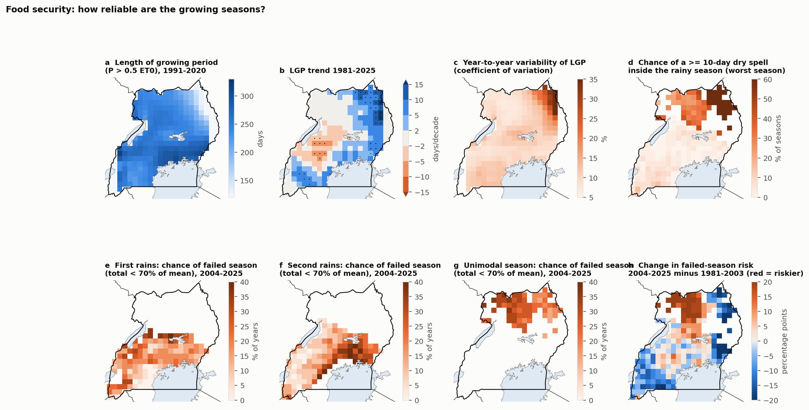
| Zone | Growing period days (1991–2020) | Trend days/decade | Season most at risk | Failed-season chance 1981–2003 → 2004–25 |
|---|---|---|---|---|
| Karamoja | 94 | +7.9* | Single season | 37% → 20% |
| North (Acholi–Kitgum) | 208 | +4.0 | Single season | 14% → 25% |
| West Nile–Lango–Teso–Elgon | 252 | +0.7 | Single season | 15% → 29% |
| Mid-west & Kyoga | 255 | −3.1 | First rains | 19% → 22% |
| Lake Victoria crescent | 273 | +3.4 | Second rains | 38% → 33% |
| South-west | 192 | +2.2 | First rains | 26% → 12% |
Food security implications
- 2026 is a live risk. The record-dry June–September has already hit second-season planting in the bimodal south, and Karamoja's season ended early. If Oct–Dec disappoints, food insecurity in Karamoja and northern Uganda will rise into early 2027. If it delivers El Niño rains, expect flooding and post-harvest losses instead.
- Shift planting to the second season where it has strengthened. In Teso, Lango, Acholi and the Lake Victoria crescent the Sep–Dec rains are now longer and wetter than the Mar–May rains.
- The single season of Acholi, Lango, Teso and West Nile has failed more often since 2004 (about one year in four). Use short-cycle and drought-tolerant varieties, conserve soil moisture, and add supplementary irrigation. Satellite vegetation records also show the March–July season weakening across most of Uganda.
- Karamoja is improving but remains the most variable place in Uganda (growing period CV 29%). Water harvesting and livestock water points remain the priority.
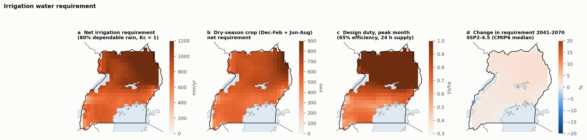
| Zone | Net requirement, year-round crop mm/yr (80% dependable) | Dry-season crop mm (Dec–Feb + Jun–Aug) | Design duty, peak month l/s/ha | Change by 2041–70 SSP2-4.5 / SSP5-8.5 |
|---|---|---|---|---|
| Karamoja | 1,523 | 765 | 1.28 | +3% / +3% |
| North (Acholi–Kitgum) | 1,203 | 669 | 1.24 | +2% / +3% |
| West Nile–Lango–Teso–Elgon | 972 | 618 | 1.08 | +2% / +2% |
| Mid-west & Kyoga | 813 | 568 | 0.81 | +2% / +1% |
| Lake Victoria crescent | 711 | 504 | 0.70 | +1% / +0% |
| South-west | 672 | 475 | 0.64 | +1% / +0% |
Design duty is for continuous (24-hour) supply. For 12-hour supply double it. County values: results/irrigation_district.csv.
11. Road and urban drainage design
Drainage is sized from the rainfall depth expected once in T years over the storm duration. Two problems had to be solved. First, satellite data smooth out point downpours: comparing CHIRPS with seven long Ugandan gauge records (Gulu, Masindi, Kasese, Jinja, Tororo, Mbarara, Kabale, 1926–1986) showed gauge return levels are 1.4–2.5 times higher (median 1.9). All design values below are calibrated by that factor. Second, sub-daily intensities come from the daily values using the TRRL East African ratio (Fiddes et al. 1974), the basis of Uganda's road drainage manual.
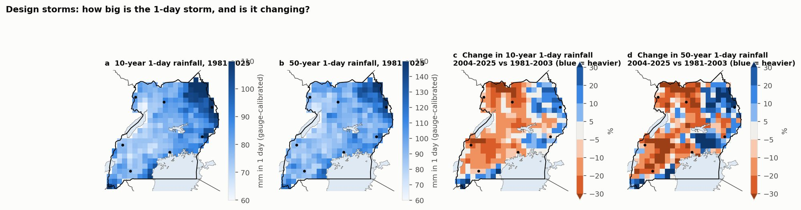
| Town | 2-yr 24-h mm | 10-yr 24-h mm | 50-yr 24-h mm | 100-yr 24-h mm | 10-yr 1-h mm/h | Change in 10-yr 2004–25 vs 1981–2003 | Uplift for 2041–70 SSP2-4.5 / SSP5-8.5 |
|---|---|---|---|---|---|---|---|
| Kampala | 58 | 79 | 97 | 105 | 54 | -12% | +9% / +13% |
| Entebbe | 66 | 87 | 108 | 118 | 59 | -6% | +9% / +13% |
| Jinja | 64 | 86 | 103 | 109 | 58 | +3% | +9% / +13% |
| Masaka | 68 | 91 | 102 | 105 | 61 | +14% | +9% / +13% |
| Mbarara | 56 | 77 | 91 | 96 | 52 | -8% | +9% / +13% |
| Kabale | 66 | 94 | 116 | 126 | 64 | +26% | +9% / +13% |
| Fort Portal | 57 | 77 | 86 | 88 | 52 | -22% | +9% / +13% |
| Kasese | 50 | 69 | 78 | 80 | 47 | -15% | +9% / +13% |
| Hoima | 55 | 71 | 76 | 76 | 48 | +1% | +9% / +13% |
| Masindi | 55 | 71 | 80 | 83 | 48 | -12% | +9% / +13% |
| Gulu | 65 | 89 | 106 | 112 | 61 | -27% | +9% / +13% |
| Lira | 61 | 82 | 95 | 99 | 56 | -13% | +9% / +13% |
| Arua | 62 | 82 | 92 | 95 | 56 | -5% | +9% / +13% |
| Soroti | 68 | 86 | 89 | 88 | 58 | -11% | +9% / +13% |
| Mbale | 70 | 91 | 104 | 107 | 62 | -7% | +9% / +13% |
| Tororo | 67 | 94 | 121 | 133 | 64 | +1% | +9% / +13% |
| Moroto | 84 | 123 | 149 | 157 | 84 | +20% | +9% / +13% |
| Kotido | 81 | 109 | 118 | 119 | 74 | +18% | +9% / +13% |
CHIRPS cell nearest each town, GEV fitted by L-moments to 1981–2025 annual maxima, multiplied by the gauge calibration factor for that return period (1.96 at 2 yr to 1.69 at 100 yr). Use these as screening values. Final design should use UNMA gauge records for the site.
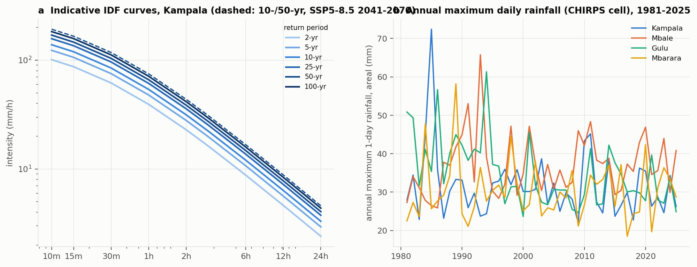
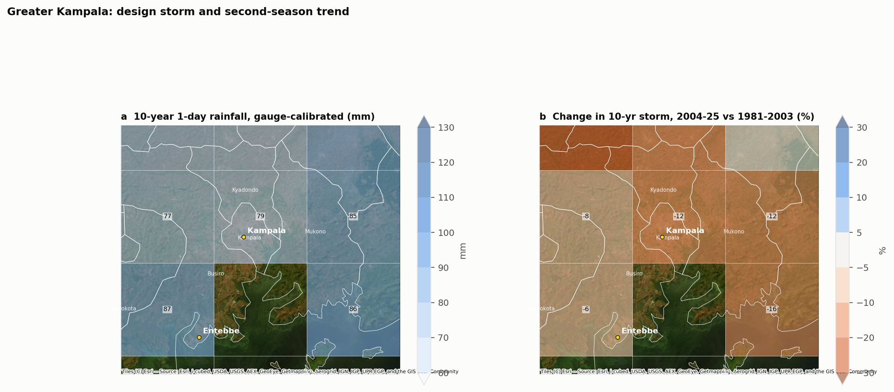
Drainage design recommendations
- Do not reduce design storms where CHIRPS shows a decline. The decline is within the noise and partly an artefact of CHIRPS's shrinking gauge input. Use the higher of the historical gauge value and the recent value.
- Add a climate-change allowance of 7% per °C of projected warming (Clausius–Clapeyron scaling). That gives the uplift in the table, about +9% (SSP2-4.5) to +13% (SSP5-8.5) for a 2050s design life. Short, intense storms (under 1 hour) may scale faster, so +20% is a prudent allowance for urban minor drainage with long design lives.
- Urban and peri-urban catchments: runoff coefficients are rising faster than rainfall. Design with future land-use imperviousness, protect wetlands and channel reserves (Nakivubo, Kinawataka, Lubigi), and use detention and permeable surfaces at plot level.
- Higher-risk settings: Mt Elgon and Mbale (rising Sep–Nov rain, steep slopes, landslides); Karamoja (storms 20–50% heavier recently, flash floods on sandy rivers that are dry most of the year); Kabale and Kigezi (heavier extremes, steep terrain); lakeshore towns (lake level).
- Check culverts and bridges on the critical network against a 2050s 50-year storm, not only against the design storm they were built for.
12. Bulk water transmission and treatment
Bulk water schemes need a reliable yield in the worst drought of their design life, the capacity to meet peak demand in hot dry spells, and treatment that copes with what storms and heat do to raw water.
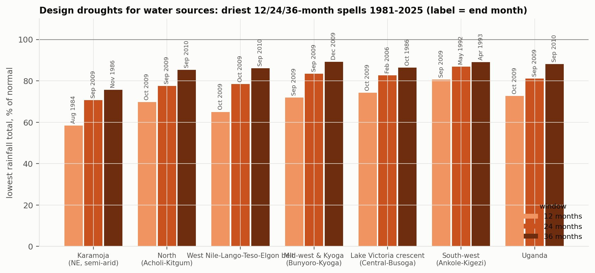
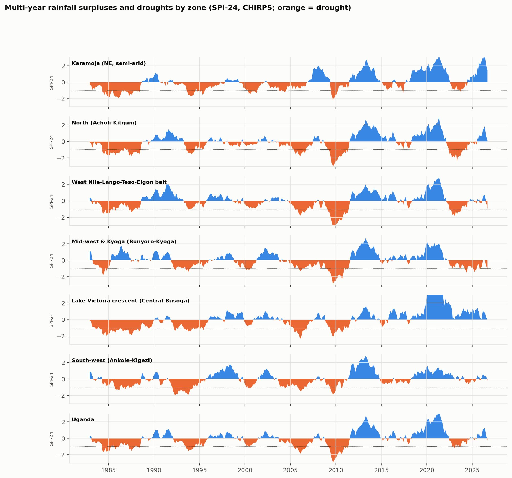
Design recommendations for bulk water lines and treatment works
- Source yield: size river and reservoir yields for a repeat of the 2008–2010 drought (24 months at 77–83% of normal rain), with a margin for higher evaporation: about +2–3% ET0 per °C. Seventeen quiet years since 2009 have made recent flow records look wetter than the long-term reality.
- Demand: warmer nights and days raise per-capita and peak-day demand. Add 3–5% to peak-day factors for schemes designed to 2050, and more in the north and Karamoja, where ET0 exceeds 2,000 mm/yr.
- Transmission: rising mean temperature has little effect on pipe hydraulics, but it raises chlorine decay and biofilm growth in long mains. Plan rechlorination points for mains longer than about 30 km.
- Treatment: design clarifiers and filters for turbidity peaks from intense storms. Each zone sees 1–4 days a year with roughly ≥ 50 mm at a gauge. Plan for first-flush events after long dry spells (most frequent in Karamoja, about 0.6 per year) and for algal blooms in lake intakes (Lake Victoria, Kyoga, Albert) as the water warms. Allow for powdered activated carbon dosing and pre-oxidation.
- Lake intakes: design for the full range of lake levels seen since 1960, including the 2020 Lake Victoria high and the 2005–2006 low. Both are plausible within a scheme's life.
- Diversify sources in the dry sub-humid belt (Acholi, Lango, Teso, West Nile) and Karamoja: conjunctive surface water and groundwater, and storage sized for 4–8 dry months.
13. Close-up maps
Satellite imagery (Esri World Imagery) with the analysis grid, county boundaries and towns. Cell labels give the value for each 0.25° cell.
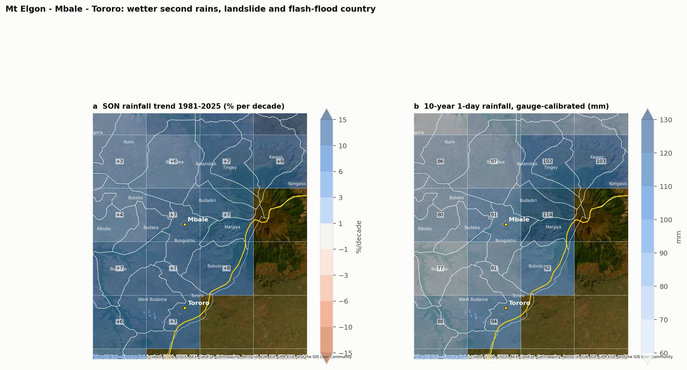
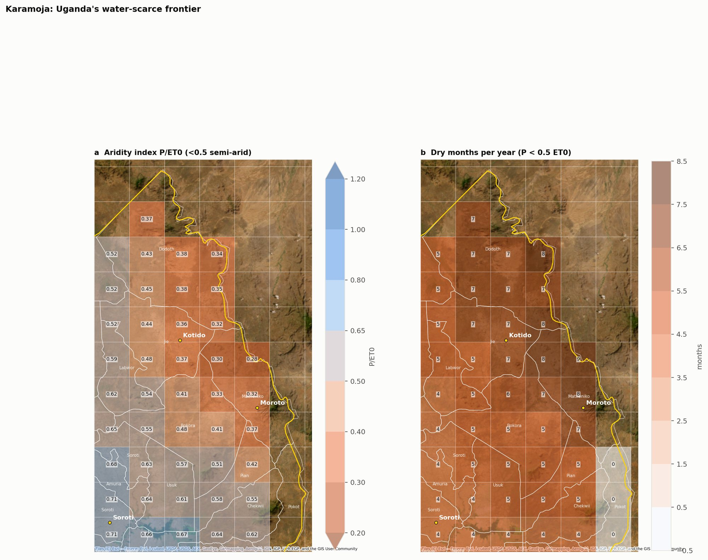
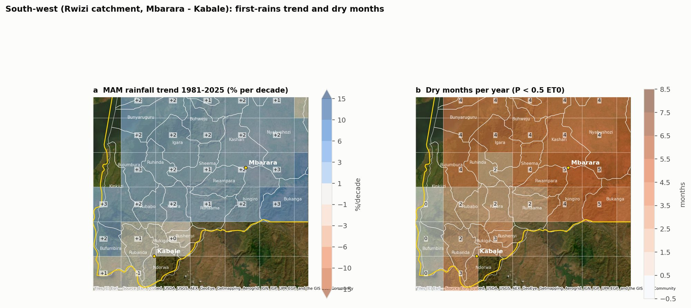
14. Data, methods and limits
Data
- Rainfall: CHIRPS v2.0 daily, 0.25°, 1981 to Aug 2026 final; CHIRPS preliminary (0.05°, averaged to 0.25°) for 1 Sep–5 Oct 2026. GPCP v2.3 monthly for global land. Seven GHCN-Daily gauges for calibration of extremes.
- Temperature: NOAA CPC global daily Tmax/Tmin (0.5°); NASA POWER daily (MERRA-2); GHCN-CAMS monthly (aggregated to 1°).
- Other: NASA POWER wind, humidity, dew point, pressure, CERES radiation; CPC soil moisture; ERSST v5 for Niño-3.4, the IOD (DMI) and its poles; NOAA ONI.
- Projections: 16 CMIP6 models (r1i1p1f1, historical + SSP2-4.5 + SSP5-8.5), regridded to 1°.
- Boundaries and imagery: Natural Earth, geoBoundaries ADM2 (151 counties), Esri World Imagery.
Methods
- Trends: Sen's slope with the Mann–Kendall test (Hamed–Rao autocorrelation correction for zone series). Base period 1991–2020.
- Seasons: anomalous accumulation (Liebmann et al. 2012; Dunning et al. 2016); bimodal or unimodal by harmonic ratio.
- ET0: FAO-56 Penman–Monteith from monthly means of daily POWER fields.
- Forecasts: linear, ridge and LightGBM regressions with leave-three-out cross-validation; tercile probabilities from Gaussian errors; RPSS against climatology.
- Extremes: GEV by L-moments (Hosking 1990); gauge calibration factor; TRRL sub-daily ratio; Clausius–Clapeyron scaling of 7% per °C.
- Future: CMIP6 ensemble-median monthly change factors applied to observed climatology (delta method).
Limits
- The ground station network behind every gridded dataset is thin in Uganda after 1990. Trends in daily extremes and daytime temperature are the least certain results.
- The 0.25° grid (about 28 km) cannot resolve single towns, valleys or mountain slopes. The close-up maps show the grid honestly rather than interpolating detail the data do not have.
- CHIRPS preliminary data for September–October 2026 may be revised when final data are released.
- Design values are for screening and planning. Detailed design should use UNMA gauge records and site hydrology.
References
- Allen, R.G. et al. (1998). Crop evapotranspiration. FAO Irrigation and Drainage Paper 56.
- Black, E., Slingo, J. & Sperber, K. (2003). An observational study of the relationship between excessively strong short rains in coastal East Africa and Indian Ocean SST. Monthly Weather Review 131.
- Dunning, C., Black, E. & Allan, R. (2016). The onset and cessation of seasonal rainfall over Africa. JGR Atmospheres 121.
- Fiddes, D., Forsgate, J.A. & Grigg, A.O. (1974). The prediction of storm rainfall in East Africa. TRRL Laboratory Report 623.
- Funk, C. et al. (2015). The climate hazards infrared precipitation with stations (CHIRPS). Scientific Data 2.
- Hosking, J.R.M. (1990). L-moments. Journal of the Royal Statistical Society B 52.
- ICPAC (2026). GHACOF-74 statement: wetter than normal OND 2026 as El Niño strengthens. 18 August 2026.
- IPCC (2021). Climate Change 2021: The Physical Science Basis. Chapters 8, 11, 12 and Atlas.
- Kimani, M., Hoedjes, J. & Su, Z. (2017). An assessment of satellite-derived rainfall products relative to ground observations over East Africa. Remote Sensing 9.
- Liebmann, B. et al. (2012). Seasonality of African precipitation from 1996 to 2009. Journal of Climate 25.
- Lyon, B. & DeWitt, D. (2012). A recent and abrupt decline in the East African long rains. GRL 39.
- Ministry of Water and Environment (2026). Advisory on the anticipated El Niño, 30 July 2026, as reported by the Daily Monitor.
- NOAA CPC (2026). ENSO diagnostic discussion, El Niño Advisory, October 2026.
- Rowell, D. et al. (2015). Reconciling past and future rainfall trends over East Africa. Journal of Climate 28.
- Saji, N.H. et al. (1999). A dipole mode in the tropical Indian Ocean. Nature 401.
- Wainwright, C. et al. (2019). 'Eastern African Paradox' rainfall decline due to shorter not less intense Long Rains. npj Climate and Atmospheric Science 2.